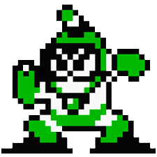
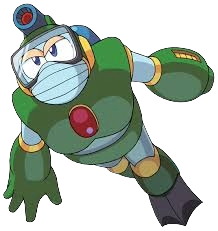

TIPS
- Avoid High Jumps: When jumping underwater, avoid reaching the top of the screen to prevent hitting spikes.
- Use Metal Blade: The Metal Blade weapon is very useful in this stage, allowing you to throw it in eight different directions to eliminate threats.
- Defeat Enemies: Focus on defeating the frog robots (Kerogs) and snail robots (Tanishi) before moving on to the next platform.
- Manage Buoyancy: Keep an eye on your buoyancy to avoid falling through the bottom of the screen.
ROLE
- Kerogs (frog-like robots) that spawn smaller frog enemies.
- Tanishi (snail robots) with shells that can be removed with shots.
- Shrinks (shrimp robots) and a giant Anko (lantern fish) that spawns them.
- M-445 robots and spiked platforms that require careful jumping
ABILITIES
- Normal Shots: Fires from his left arm cannon, dealing standard damage megaman.fandom.com+1.
- Bubble Lead: His special weapon, fired from both his left arm cannon and a bubble gun on his head. The Bubble Lead is a lead-like bubble that can pierce armor and damage opponents megaman.fandom.com+1.
- Bubble Spray: A conductive bubble attack that can be used offensively or defensively Mega Man RPG Prototype.
- Bouncing Bubble: Can bounce multiple times, useful for hitting enemies from a distance or creating hazards